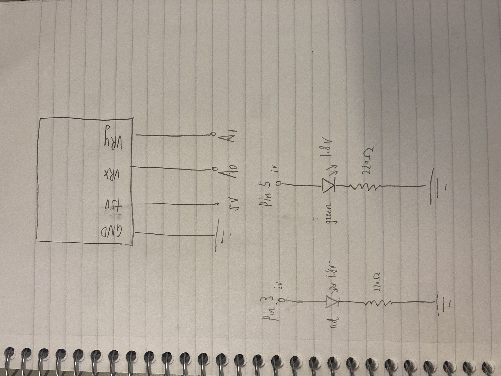
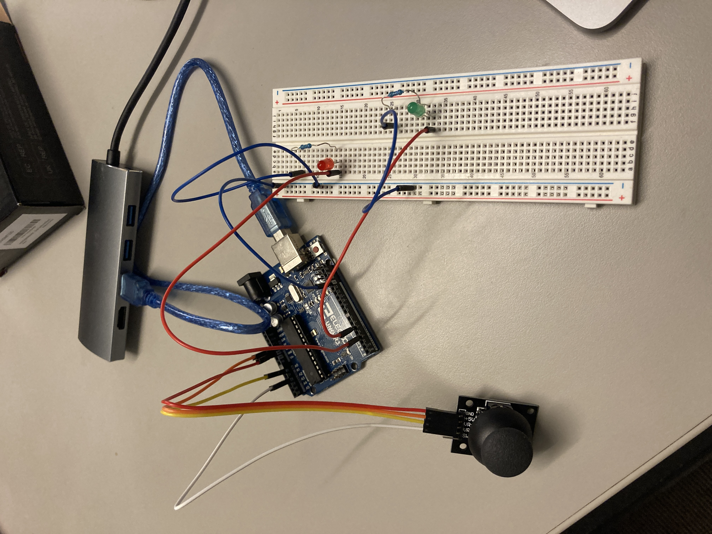

Assignment 6 - Talking to the web!

Process:
I decide to use the red and green resistors (with 1.8V drop).
5V - 1.8V = 20mA * R
3.2V = 0.02A * R
R = 160Ω
The minimum voltage requirement is 1.8V, 3.2V > 1.8V. So it's working.
We need to find the resistors that close to 160Ω
What if we choose 220Ω:
I = 3.2V/220Ω
I = 0.0145A
I = 14.5A
The maximum current requirement is 30mA, 14.5mA smaller than 30mA. So 220Ω's resistors are working well.
Therefore, I decide to use the 220Ω resistors

(schematic)

(Input: joystick, Output: LED)
Arduino Code:
const int JOYSTICK_X_PIN = A0; //set joystick x pin as A0
const int JOYSTICK_Y_PIN = A1; //set joystick y pin as A1
void setup() {
// Initialize the serial connection
Serial.begin(9600);// initialize serial communication at 9600 bits per second:
pinMode(3, OUTPUT);// make pin 3 as an output
}
// the loop routine runs over and over again forever:
void loop() {
int xValue = analogRead(JOYSTICK_X_PIN); // Read the analog input values from the X pins of the joystick
int yValue = analogRead(JOYSTICK_Y_PIN); // Read the analog input values from the y pins of the joystick
Serial.print("["); //print "[" to start list
Serial.print(xValue); //print x value
Serial.print(","); //print comma
Serial.print(yValue); //print y value
Serial.println("]"); //print "]" to end list
delay(10); //delay for 0.01 s
int constrain_range = constrain(xValue, 0, 1023); // limits range of sensor values to between 0 and 1023
int outputValue = map(constrain_range, 503, 1023, 0, 100); //intended to change constrain_range from 503 to 1023 into another range 0 to 100 (I decide maximum is 100 because 255 is so bright)
int outputValue2 = map(constrain_range, 0, 503, 100, 0); //intended to change constrain_range from 0 to 503 into another range 100 to 0 (I decide maximum is 100 because 255 is so bright)
if (xValue >= 503) { //if x value larger than 503
analogWrite(3, outputValue); //set the brightness of pin 3 is outputValue
} else {
analogWrite(3, outputValue2);//set the brightness of pin 3 is outputValue2
}
if (Serial.available()) { // if there's serial data
int inByte = Serial.read(); // read it
Serial.write(inByte); // send it back out as raw binary data
analogWrite(5, inByte); // use it to set the green LED brightness
} else { //else
analogWrite(5, 0); // set the green LED brightness to 0
}
}
JavaScript Code:
//https://workshops.hackclub.com/platformer/
var groundSprites;
var GROUND_SPRITE_WIDTH = 100;
var GROUND_SPRITE_HEIGHT = 100;
var numGroundSprites;
var GRAVITY = 2;
var numGroundSprites;
var mario, mario_running;
var JUMP = -10;
var obstacleSprites;
var isGameOver;
var score;
var dataarray = [];
var serial;
var portName = '/dev/tty.usbmodem141301';
window.preload = () => { //let window to load the animation
mario_running = loadAnimation("Capture1.png","Capture3.png","Capture4.png");
}
window.setup= () => { //set up the system
serial = new p5.SerialPort(); // make a new instance of the serialport library
serial.on('list', printList); // set a callback function for the serialport list event
serial.on('connected', serverConnected); // callback for connecting to the server
serial.on('open', portOpen); // callback for the port opening
serial.on('data', serialEvent); // callback for when new data arrives
serial.on('error', serialError); // callback for errors
serial.on('close', portClose); // callback for the port closing
serial.list(); // list the serial ports
serial.open(portName); // open a serial port
isGameOver = false;
score = 0;
createCanvas(windowWidth, windowHeight);
background(150, 200, 250);
groundSprites = new Group();
numGroundSprites = width / GROUND_SPRITE_WIDTH + 1;
for (var n = 0; n < numGroundSprites; n++) {
var groundSprite = createSprite(
n * 100,
height - 10,
GROUND_SPRITE_WIDTH,
GROUND_SPRITE_HEIGHT
)
groundSprites.add(groundSprite);
}
mario = createSprite(50,height-90,50,50);
mario.addAnimation("running", mario_running);
mario.scale = 0.5;
obstacleSprites = new Group();
}
function printList(portList) {// portList is an array of serial port names
for (var i = 0; i < portList.length; i++) {
// Display the list the console:
print(i + " " + portList[i]);
}
}
function serverConnected() { //set up function to check server connection
print('connected to server.');
}
function portOpen() { //set up function to check if port is open
print('the serial port opened.')
}
function serialError(err) { //set up function to if any error oin serial
print('Something went wrong with the serial port. ' + err);
}
function portClose() { //set up function to if post is closed
print('The serial port closed.');
}
function serialEvent() { //set up function to if post is closed
if (serial.available()) {
var datastring = serial.readLine(); // readin some serial
var newarray;
try {
newarray = JSON.parse(datastring); // can we parse the serial
if (typeof newarray == 'object') {
dataarray = newarray;
}
console.log("got back " + datastring);
} catch(err) {
// got something that's not a json
}
}
}
window.draw = () => { //start to draw the interface
if (isGameOver) { //if gameocer is true
background(0);
fill(255);
textAlign(CENTER);
text('Your score was: ' + score, width/2, height/2); //show the score
text(
'Game Over! Click anywhere to restart',
width/2,
height/2 - 30
);
mario.remove();
obstacleSprites.remove();
groundSprites.remove();
if (mouseIsPressed) {
isGameOver = false;
score = 0;
background(150, 200, 250);
groundSprites = new Group();
numGroundSprites = width / GROUND_SPRITE_WIDTH + 1;
for (var n = 0; n < numGroundSprites; n++) {
var groundSprite = createSprite(
n * 100,
height - 10,
GROUND_SPRITE_WIDTH,
GROUND_SPRITE_HEIGHT
)
groundSprites.add(groundSprite);
}
mario = createSprite(50,height-90,50,50);
mario.addAnimation("running", mario_running);
mario.scale = 0.5;
// Reset the game variables
score = 0;
isGameOver = false;
}
} else { //if gameover is false
background(150, 200, 250);
console.log(dataarray);
mario.overlap(groundSprites, over);
// let overlapDetected = obstacleSprites.overlap(mario, endGame);
// console.log("Overlap detected:", overlapDetected);
// if (groundSprites.overlap(mario)) {
// mario.velocity.y = 0;
// mario.position.y = (height-75) - (mario.height/2);
// console.log("check it");
// };
mario.addSpeed(0.25, 90);
if (dataarray[0] < 500) { //the 1st number in the list from Arduino is smaller than 500
mario.velocity.y = JUMP; //mario just jump
console.log("work");
};
if (dataarray[0] > 600) {//the 1st number in the list from Arduino is bigger than 600
mario.velocity.y = 10;
console.log("work");
};
if (mario.position.y < 0) {
mario.velocity.y = GRAVITY;
}
// if (key == "s") {
// mario.velocity.y = GRAVITY + 2;
// }
mario.position.x = mario.position.x + 5;
camera.position.x = mario.position.x + width / 2;
if (mario.position.x > width / 2) {
mario.position.x = width / 2;
}
var firstGroundSprite = groundSprites[0];
if (firstGroundSprite.position.x <= camera.position.x - (width/2 + firstGroundSprite.width/2)) {
groundSprites.remove(firstGroundSprite);
firstGroundSprite.position.x = firstGroundSprite.position.x + numGroundSprites*firstGroundSprite.width;
firstGroundSprite.position.y = height - 10;
groundSprites.add(firstGroundSprite);
}
if (random() > 0.97) {
var obstacle = createSprite(camera.position.x,random(100, height-50),50,50);
obstacleSprites.add(obstacle)
}
for (var i = 0; i < obstacleSprites.length; i++) {
obstacleSprites[i].position.x -= 5;
obstacleSprites[i].overlap(mario, endGame);
}
for (var i = 0; i < groundSprites.length; i++) {
groundSprites[i].position.x -= 5;
}
drawSprites();
score = score + 1;
textAlign(CENTER);
text(score, camera.position.x - width / 2, 10);
}
}
function endGame() { //make the function to end game
isGameOver = true;
console.log("ii");
}
function over(mario, groundSprites) { //make the function to set the mario velocity and position when mario overalp with groundsprites
mario.velocity.y = 0;
mario.position.y = height - 90;
}
function keyPressed() { //set up the function called keyPressed
//console.log("writing key");
serial.write(key); //return the number of written bytes.
mario.velocity.y = JUMP; //the mario will jump
}